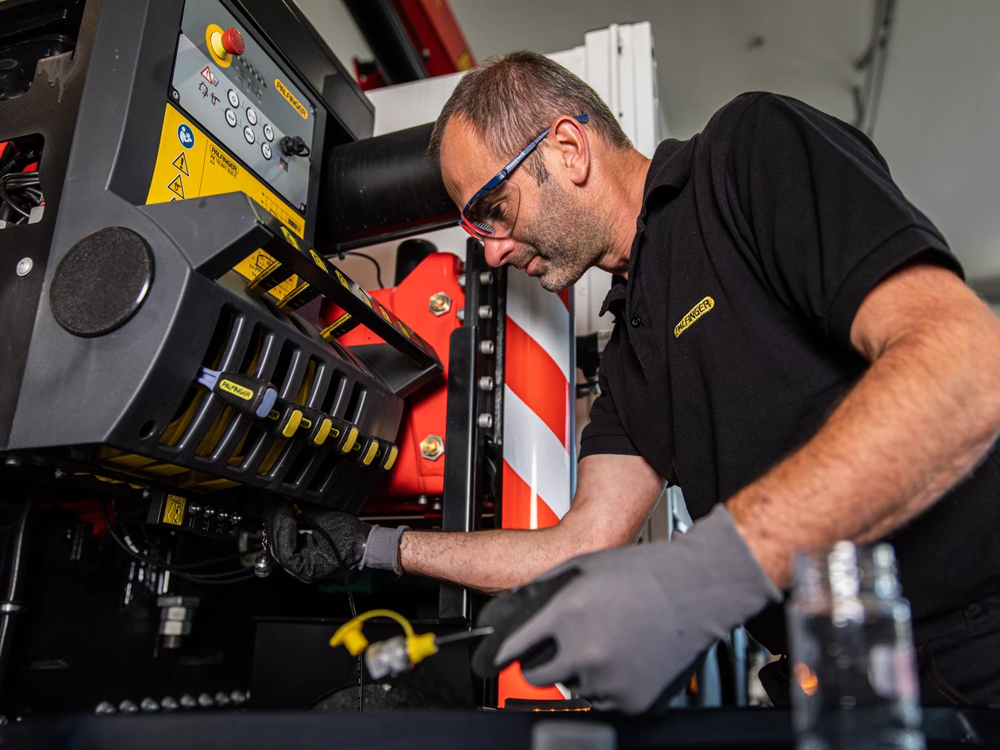
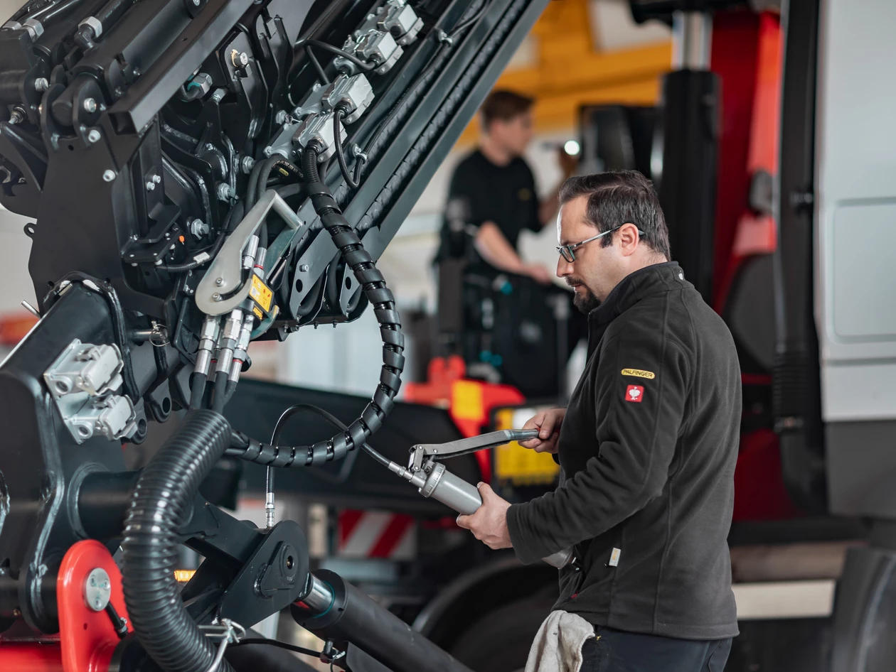
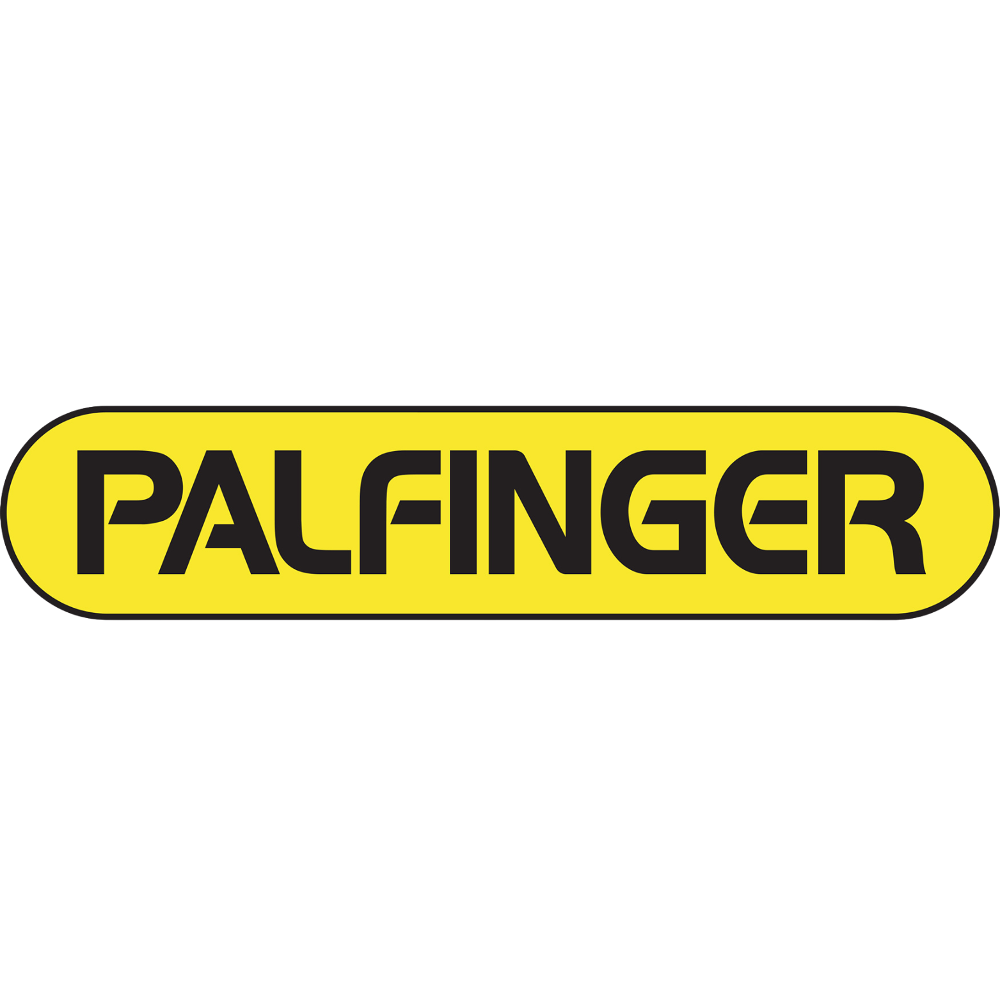

Servicio de auxilio
¿Equipo inmobilizado? No te preocupes, vamos donde estés: campo, ciudad, ruta o depósito. Diagnóstico y reparación en el acto.

Desde hace 25 años somos el taller de confianza de empresas cooperativas, municipios, corralones y particulares. Reparación, mantenimiento y repuestos para todo tipo de maquinaria: rurales, industriales, pesadas, etc.
Urgencias 24/7 → Tu grúa operativa hoy mismo


¿Equipo inmobilizado? No te preocupes, vamos donde estés: campo, ciudad, ruta o depósito. Diagnóstico y reparación en el acto.

Stock permanente: válvulas, mangueras de alta presión, adaptadores, filtros, etc. Trabajamos con las mejores marcas: Distrivent, JS, Stflex, Lanss, etc.

Mantene tu equipo Hidro-Grubert o Palfinger en perfectas condiciones con nuestros servicios de mantenimiento, garantias y repuestos originales.
Servicio Técnico Oficial y venta de repuestos originales

Servicio Técnico Oficial
Repuestos originales

Servicio Técnico Oficial
Repuestos originales
.png)
Distribuidores autorizados
Repuestos y accesorios
✓ Garantía de fábrica • ✓ Soporte técnico directo • ✓ Repuestos originales